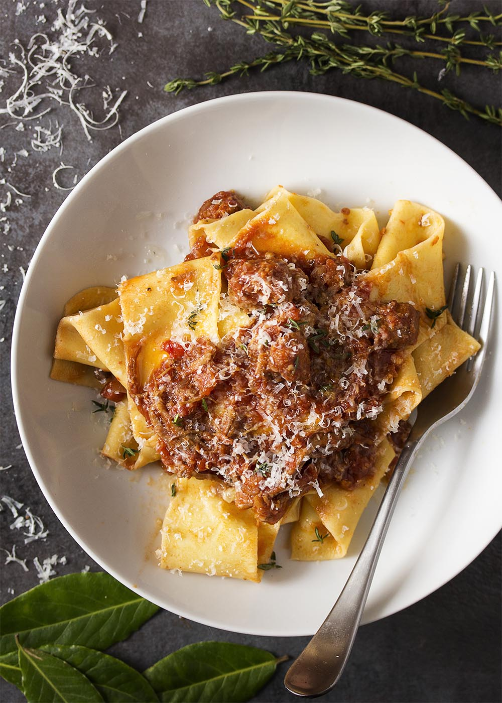

Ragout

Description
This hearty sauce blends tender, finely minced beef and savory pork, braised for hours in a rich reduction of dry wine, aromatic vegetables, and Italian tomatoes. As it simmers, the meats melt into a deeply flavorful, velvety sauce that clings perfectly to the ridges and curves of your freshly made pasta. Finished with a touch of fresh herbs and aged Parmigiano-Reggiano, every bite delivers a luxurious, melt-in-your-mouth texture that celebrates traditional, time-honored cooking.
Ingredients
- 1.5lbs ground beef
- 1.5lbs ground Italian Sausage
- 1 yellow onion
- 5 cloves garlic
- 1 28-oz can of crushed tomatoes
- Salt and Pepper, TT
- Calabrian Chile, TT
- 1/4 cup dry white wine
- 4 portions Fresh Pasta
- 1c freshly grated parmesan cheese
- Fresh basil, TT
Steps:
- In an oiled skillet, soften onion and garlic
- Add both beef and sausage. Break it down into small chunks, and cook it until all of the moisture is cooked off.
- Once carmelization is occurring, deglaze with wine.
- Add crushed tomatoes, then fill the tomato can with water and add that as well.
- Add Calabrian Chiles, Salt, and Pepper
- Practice your patience. This needs to simmer for at least an hour!
- Once the sauce is at an appropriate consistency, throw in the pasta.
- Allow the pasta to be coated in sauce.
- Remove the skillet from the heat. Let it sit for a few minutes and set up.
- Add cheese and basil off heat.
- Serve and enjoy!
Home